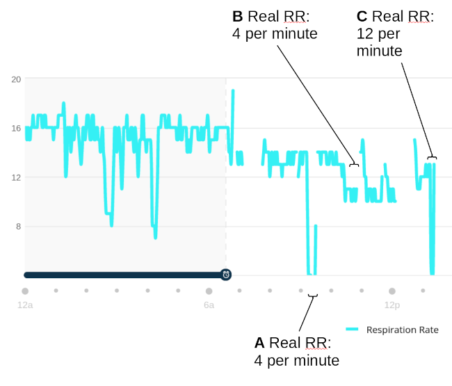

Is your fitness watch lying to you?

The use of smart watches for tracking health and fitness metrics has recently become popular. The vendors of these devices caution against using their readings for making any kind of health decision but, at the same time, they present the data in an analytical, clinical way. The data certainly looks like it can be trusted for medical purposes.
But can it? Or is this just another dose of snake oil?
On the whole I've found -- as others have -- that fitness watches can track heart rate reasonably well. Certainly these devices have gotten better at this over the last few years. I feel reasonably confident that I can trust this metric. However, my watch presents data on 'stress', respiration rate, sleep quality, and a bunch of other things. Can any of this information be trusted?
All these metrics have to be derived from heart-beat information, coupled with movement and position sensors. Most smart watches have no other relevant sensors. It's plausible that respiration rate can be derived from heart-beat, because the intervals between beats vary during the respiration cycle. But 'plausible' isn't the same as 'practicable'. It's actually really hard to gather accurate beat-to-beat heart timings from a wrist-worn device, so it shouldn't be a surprise if the derived metrics are not particularly accurate.
I decided to test how accurately my Garmin Venu 2 and Garmin Vivoactive 3 could track respiration rate. I haven't tested any other devices, but they all calculate this metric the same way.
The reason I tested respiration rate is that this is an entirely objective measure. 'Stress' and 'sleep quality' are not well defined, and it isn't clear even how to express them. But to measure respiration rate in a completely objective way, all you need is a timer of some kind. So the accuracy of this metric is easy to assess, and anybody can do it in ten minutes or so.
I therefore carried out a series of experiments, breathing at different rates (assessed by an external timer). The graph below shows my respiration rate during one series of experiments, as reported by the Venu 2 via the Garmin Connect web service. Results from the Vivoactive were broadly similar.

The first test was to set the watch to its 'breathwork' mode, with a breathing cycle of 4 breaths per minute. In this mode, the watch presents a timer, and the user is supposed to breath in and out to that timer. Point 'A' on the graph shows that the watch correctly reports this respiration rate.
A little later, I made no change to the watch settings, but just reduced my breathing rate to 4 per minute, using an external timer. The watch was unaware that I was doing anything out of the ordinary. I continued this test, and the others I describe here, for at least five minutes, to allow for the effect of averaging. Note at point 'B' the watch records my respiration rate during this experiment as about 12 per minute -- much higher than the true value of 4 per minute.
Then I tried setting the watch to 'breathwork' mode again, with a breathing cycle of 4 breaths per minute, but actually breathing at 12 breaths per minute, using an external timer. At point 'C' you can see that the watch records 4 breaths per minute, even though my real respiration rate is much higher.
It's clear that the watch can't track my respiration rate even approximately. To be fair, that's not entirely unexpected -- this kind of respiration tracking is difficult. I repeated these tests at different times of day, and on different days. It turned out that it's not just extremes of respiration rate that the watch can't track. I tried adjusting my breathing rate gradually over a range from 4 to 20 breaths per minute. At no point did the watch display anything other than 12-14 breaths per minute.
That my respiration rate was reported inaccurately is not what blew my mind: what took my breath (hah!) away was that the watch actually lied to my face. It recorded a respiration rate that matched the timing of its own breathing exercises, even when the real respiration rate was not remotely similar. The watch is not merely inaccurate -- it tells outright, bare-faced, in-its-teeth lies.
To be absolutely fair, I have to point out that the watch isn't always completely inaccurate -- the respiration rate is not just a random number. The average rates recorded over hours are broadly correct -- I've checked them against medical-grade respiration monitoring devices (yes, I really am that pedantic). I'm not going into those tests in more detail, because most people won't have the equipment to repeat them. But I imagine that everybody has access to a timer of some kind (including the one on your wrist).
I have to stress that the poor accuracy isn't really the pressing issue here: the frightening thing is that the watch deliberately lies, presenting data that it assumes should be correct, without actually testing anything.
What does this say about the other health metrics that a smart watch might report? I think it says that, not only might they be inaccurate, but that the device can plausibly be assumed to invent results and present them as authoritative.
I've only tested Garmin devices, and only two of those. And, of course, I've only tested myself as the operator. It's entirely possible that other people will find these watches more accurate, for a whole heap of different reasons. What isn't dependent on the user is that the watch presents metrics that it assumes rather than measures. I presume that this could also happen in the reporting of 'stress' and other, more subjective measures. Unfortunately, it's not as easy to test whether those results are reliable, because they poorly defined to start with.
However, I'm fairly sure that the 'stress' metric is also full of lies. If I sleep during the time I've told the watch is my regular sleep time, the 'stress' display generally shows 'rest'. If I sleep at times outside this period, the 'stress' measure does not change very much from its usual day-time reading. I'm fairly sure that the watch is muting the stress readings when it assumes I'm asleep.
So where does this leave us? I've reported my observations on this subject to Garmin several times over the last few years. The best response I've had is that they're 'working on it'. As I said, measuring respiration rate from heart beat variability is difficult. What worries me is that the Garmin watch is inventing data, and presenting it as measurement.
But there's no need to take my word for any of this: if you have a fitness watch that reports respiration rate, its accuracy is actually easy to test for yourself. If the watch is inaccurate in this measure, it's probably safe to assume that it's inaccurate elsewhere also.